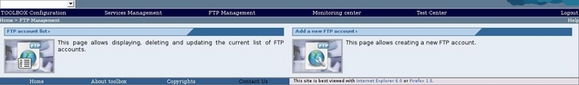

To add an FTP account click on the FTP Management link toolbar. The browser should display

Click on the "Add a new FTP account" section.The browser should display
Fill the new account input form: username, password, root directory.
Click on the Write permission check box if you want to create a new account with write permissions, then click on the "Add" button: the page with the up-to-date list should be displayed.